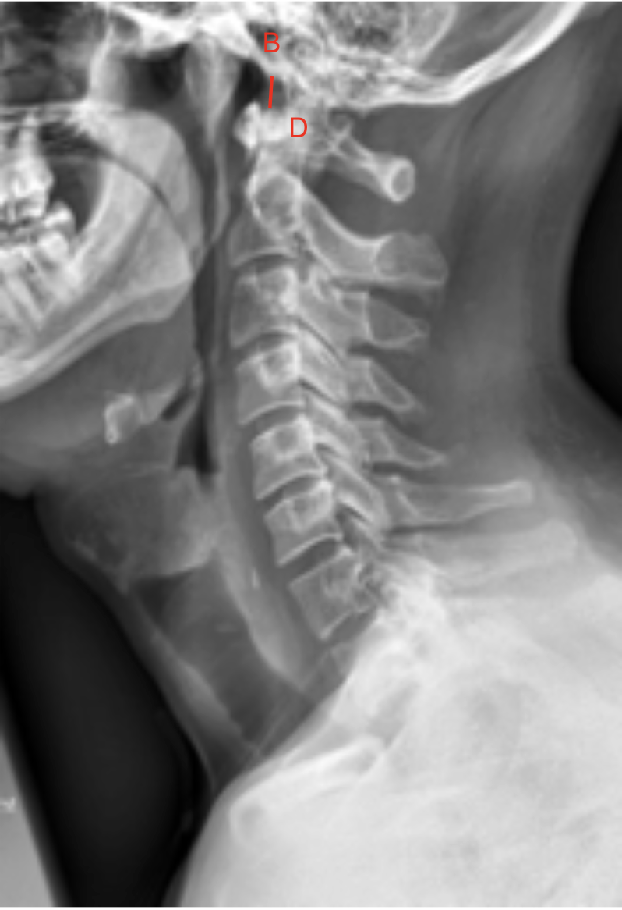
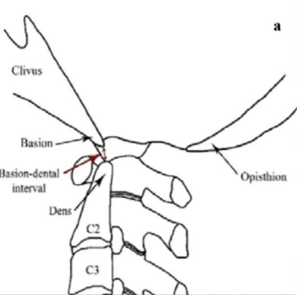

1) Description of Measurement
The Basion-Dens Interval (BDI) is a radiographic measurement used to assess atlanto-occipital alignment and integrity of the craniovertebral junction.
It measures the distance between the basion (anterior margin of the foramen magnum) and the tip (apex) of the odontoid process (dens).
An increased BDI indicates potential atlanto-occipital dislocation (AOD) or craniovertebral instability — conditions often seen in high-energy trauma, rheumatoid arthritis, or congenital ligamentous laxity.
2) Instructions to Measure
3) Normal vs. Pathologic Ranges
4) Important References
Harris JH Jr, Carson GC, Wagner LK. Radiologic diagnosis of traumatic occipitovertebral dissociation: 1. Normal occipitovertebral relationships on lateral radiographs of supine subjects. AJR Am J Roentgenol. 1994 Apr;162(4):881-6. doi: 10.2214/ajr.162.4.8141012.
Powers B, Miller MD, Kramer RS, Martinez S, Gehweiler JA Jr. Traumatic anterior atlanto-occipital dislocation. Neurosurgery. 1979 Jan;4(1):12-7. doi: 10.1227/00006123-197901000-00004.
Kleweno CP, Zampini JM, White AP, et al. Survival after concurrent traumatic dislocation of the atlanto-occipital and atlanto-axial joints: a case report and review of the literature. Spine (Phila Pa 1976). 2008 Aug 15;33(18):E659-62. doi: 10.1097/BRS.0b013e318182272a.
Smoker WR. Craniovertebral junction: normal anatomy, craniometry, and congenital anomalies. Radiographics. 1994 Mar;14(2):255-77. doi: 10.1148/radiographics.14.2.8190952.
5) Other info....
The BDI is often evaluated alongside Power’s Ratio, Basion-Axial Interval (BAI), and Atlanto-Dental Interval (ADI) for a complete assessment of occipitocervical stability.
CT is the gold standard for confirming measurements and detecting subtle dislocations, while MRI is used to assess ligamentous injury.
A BDI > 12 mm in adults (or > 10 mm in children) strongly indicates disruption of the tectorial membrane or alar ligaments, which normally tether the occiput to the dens. In trauma settings, this often requires immobilization and surgical stabilization.
Pediatric patients may have physiologic widening due to ligamentous elasticity — correlation with clinical findings is essential.
Always ensure neutral positioning; flexion or extension can artifactually increase or decrease the interval.